Your plant on one screen, in real time.
The control center of your operation: how many orders are in progress, which are late, which machines are at their limit and what is due this week. No reports to request, no spreadsheets.
Designed to be understood at a glance.
Produced versus planned, day by day.
Compare what was made with what was planned, spot low-output days and measure weekly attainment and scrap.
- Total produced, planned, attainment and scrap
- Daily trend and per-day detail
- Period filters: 7 days, month, quarter

Know which machines are at their limit.
Capacity used is calculated from in-progress and scheduled orders. See the target, the average and each machine’s load to balance work.
- Capacity target and period average
- Load ranking by machine
- A basis to decide shifts and priorities

What is urgent shows up before it is late.
Orders about to be due, blocked by missing material or affected by maintenance: everything shows with its progress and who must act.
- Upcoming due dates with status and progress
- Missing material and stopped machine alerts
- Recent activity across the plant

Everything you need in this module.
Active production
Orders in progress right now.
Late POs
The ones that need attention today.
Blocked POs
Stopped by missing materials.
Capacity used
Percentage of total capacity.
Upcoming deliveries
What ships in the next 7 days.
Pending inspections
Quality waiting for release.
In four steps.
Set up your operation
Machines, products and routings.
Create orders
From sales orders or directly.
Operators log work
From a tablet at each step.
The dashboard updates
No manual entry or reports.
Questions about the production dashboard.
Where do the dashboard numbers come from?
From the production orders themselves and the logs operators make at each step. Nothing extra has to be entered.
How often does it update?
KPIs reflect the current state of orders; the plant map refreshes automatically every few seconds.
Can I show it on a plant screen?
Yes. POMGT runs in the browser: plant monitor, computer, tablet or phone.


All your production, in one place.
We show you POMGT with your own products, machines and routings. In one call you will see how your plant looks inside the system.